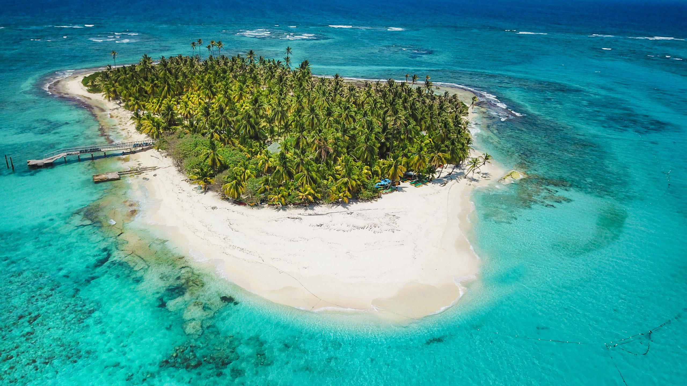
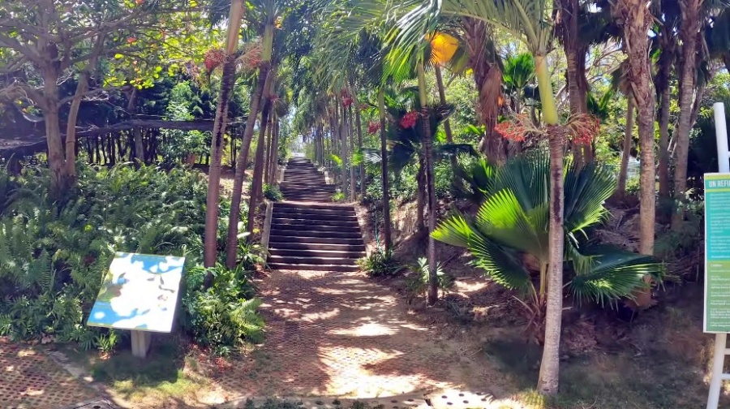
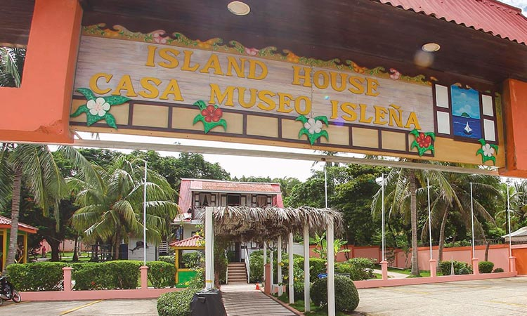

San andres
What to do in San Andres?
Johnny Cay
A boat ride to Johnny Cay Regional Park, the islet seen to the northeast, from San Andrés, Colombia, It is unmissable. In this place the beach is white, palm trees abound and there are restaurants that serve fish-based dishes. Visitors can also enjoy live performances by local bands performing reggae songs.
San Andrés Botanical Garden
San Andrés is seen in a different way from the twelve meter high viewpoint that is installed in the Botanical Garden, at the Caribbean headquarters of the National University of Colombia. In this space of eight hectares, of which six are maintained As a nature reserve, the biosphere reserve is studied and species that have survived since the time of the dinosaurs, such as ferns and pines. Gives visitors a tour of the different stages of the evolution of species of flora and gives a brief summary of the history of the plants brought to the island by the English settlers.
First Hispanic Baptist Church

The First Baptist Church is a must-see stop for all those who wish to learn a little more about the culture and history of San Andrés Island. This iconic Church is made entirely of pine wood and built in parts in Alabama, United States and then assembled in the highest part of the island, known as La Loma.
Island House Museum
The Island House Museum is a place dedicated to celebrating the culture and customs of the natives of San Andrés and Providencia. Inside of the museum you can learn about typical examples of island architecture, customs, dances, music and gastronomy.